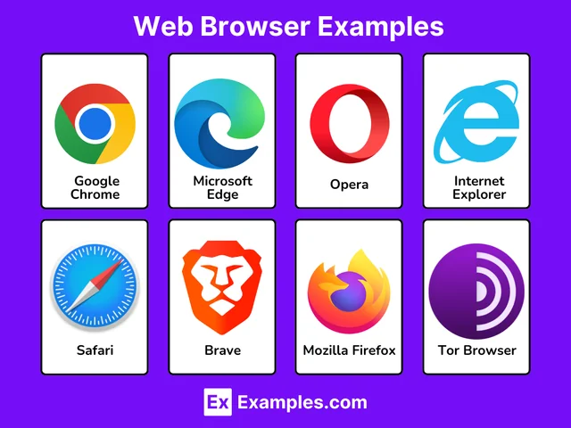

Felipe Bertolini - 1° ano de Informática IFRS Erechim!
Um browser (ou navegador) é um software instalado em computadores ou dispositivos móveis usado para acessar, visualizar e interagir com sites na internet. Ele funciona traduzindo códigos complexos (HTML, CSS, JavaScript) em uma interface gráfica amigável, permitindo visualizar textos, imagens e vídeos.

Acima vemos alguns exemplos de browsers, mas qual é o melhor?
A escolha do "melhor" navegador depende inteiramente do que você prioriza no seu dia a dia. Atualmente, o Google Chrome continua sendo o mais popular devido à sua integração com serviços Google e vasta biblioteca de extensões. No entanto, outros navegadores superam o Chrome em categorias específicas como privacidade, economia de bateria (para laptops) ou customização.
© 2026 - Felipe Bertolini | IFRS Erechim
Projeto sobre a Internet - 1° ano de Informática
Cadastre-se para saber mais! Clicando aqui